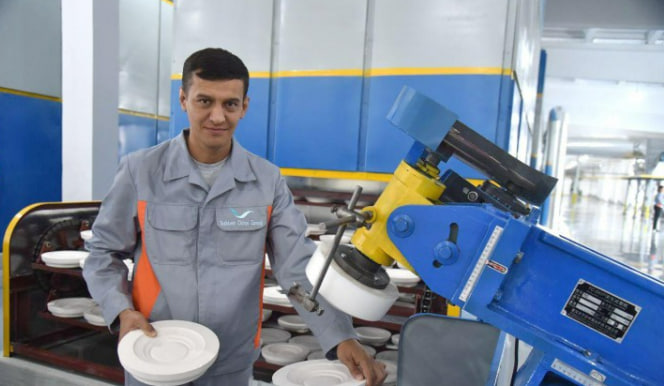
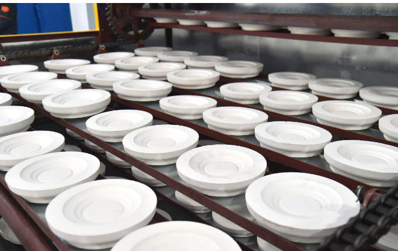

2-Sarlavha

ISHLAB CHIQARISH JARAYONI
Chinni idishlarni ishlab chiqarish jarayonida ishlatiladigan asosiy uskunalar va materiallar haqida batafsil ma'lumot beraman:
1. Material tayyorlash uskunalari:
Mikserlar:
Kaolin, feldspar va qumni aralashtirish uchun ishlatiladi. Ular yuqori darajadagi silliqlikni ta'minlaydi.
Skrinlar:
Materiallarni tozalash va kerakli granulometriya olish uchun.
2. Shakllantirish uskunalari:
Qoliplar: Har xil shakllardagi idishlarni olish uchun ishlatiladi. Qoliplar metal, plastmassa yoki gipsdan bo'lishi mumkin.
Tokar mashinalari: Qo'l bilan yoki avtomatik ravishda idishlarni shakllantirish uchun foydalaniladi.
Presslar: Aralashmani yuqori bosim bilan qoliplarga joylash uchun.
3. Quruq qilish uskunalari:
Konditsionerlar: Idishlarni bir xil namlikda quritish uchun ishlatiladi, bu esa deformasiyalarning oldini oladi.
Quruq xonalar: Tabiiy yoki mexanik usul bilan quritish uchun.
4. Kuydirish uskunalari:
Pechlar:
Boshqa termal pechlar: Birinchi kuydirish uchun. Bu pechlar yuqori haroratda ishlaydi (taxminan 900-1100 °C).
Glazur pechlari: Ikkinchi kuydirish jarayoni uchun, glazur qo'shilgandan so'ng.
Termografik uskunalar: Pechda haroratni nazorat qilish uchun.
5. Bo'yash va bezash uskunalari:
Sprey qoplamalari: Avtomatik va qo'l bilan bo'yash uchun.
Silkscreen mashinalari: Katta miqdorda naqshlar va dizaynlarni qo'llash uchun.
Qo'l bilan chizish asboblari: San'atkorlar tomonidan bezash uchun.
6. Sifat nazorati uskunalari:
Optik tekshirish tizimlari: Mahsulotning estetik jihatlarini va nuqsonlarni tekshirish uchun.
Mexanik kuch testerlar: Idishlarning mustahkamligini o'lchash uchun.
7.Qadoqlash va tarqatish uskunalari:
Qadoqlash mashinalari: Tayyor mahsulotlarni qadoqlash uchun avtomatik tizimlar.
Logistika tizimlari: Mahsulotlarni transport qilish va saqlash uchun.
8. Boshqaruv tizimlari:
ERP tizimlari: Ishlab chiqarish jarayonini boshqarish, materiallar va zahiralarni nazorat qilish uchun.
Bu uskunalar har bir ishlab chiqarish korxonasida turlicha bo'lishi mumkin, lekin umuman olganda, yuqorida keltirilganlar chinni idishlarni sifatli ishlab chiqarish uchun zarur bo'lgan asosiy texnologiyalardir.